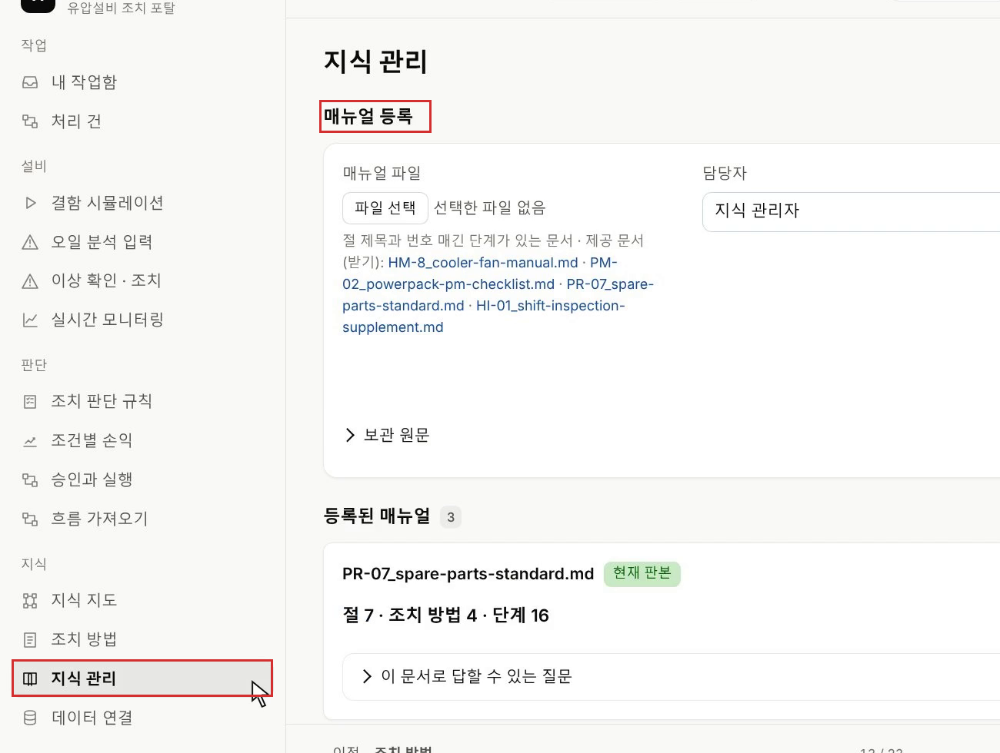
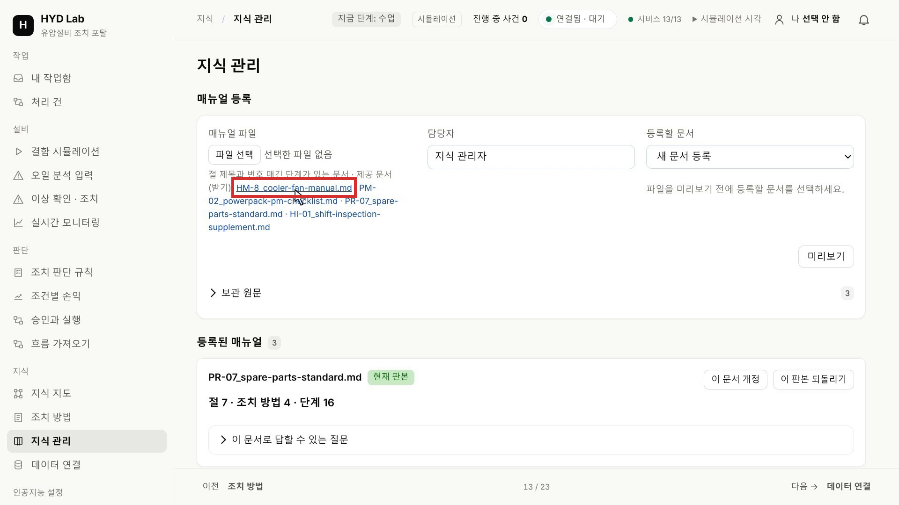
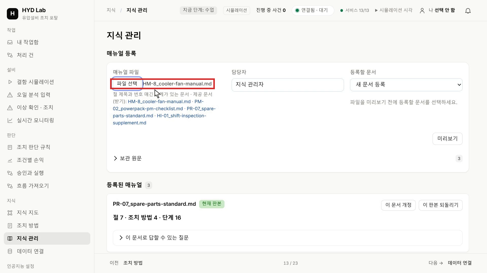
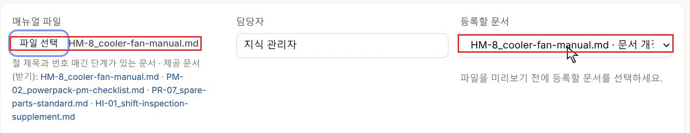
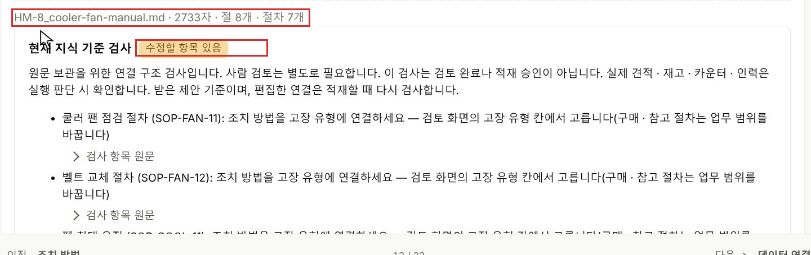
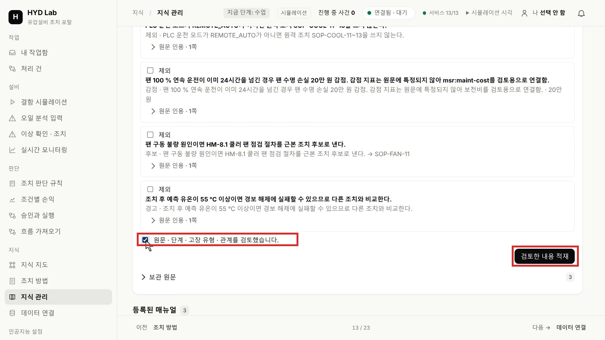
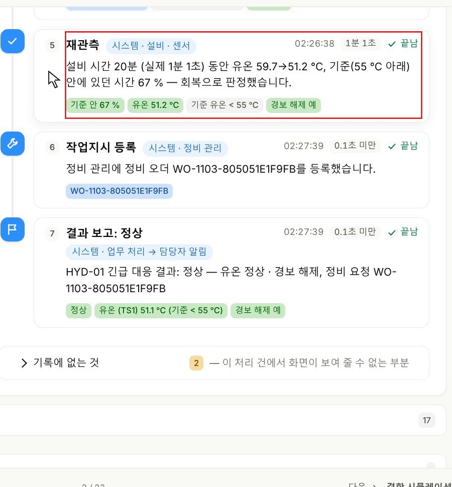
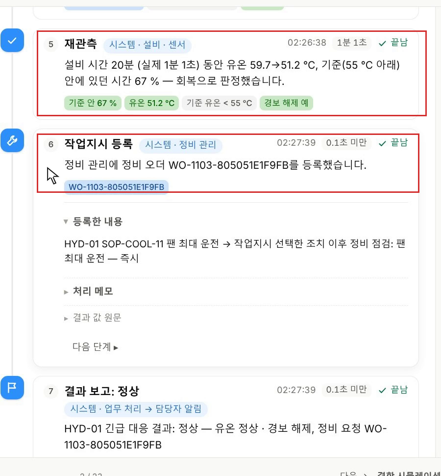

쿨러 매뉴얼을 넣고 미리 보기
AI가 근거로 쓸 지식은 매뉴얼에서 나옵니다. 그래서 문서를 넣는 일부터 합니다. 왼쪽 지식 묶음의 지식 관리를 누르세요. 오른쪽에 매뉴얼 등록이 열립니다.

같은 칸의 **제공 문서(받기)**에서 첫 번째 링크 HM-8_cooler-fan-manual.md를 눌러 파일을 받습니다. 쿨러 경보를 다루는 실습이라 다른 세 문서는 받지 않아도 됩니다.

파일 선택을 눌러 방금 받은 파일을 고르세요. 버튼 옆에 같은 파일 이름이 나타납니다.

등록할 문서를 열어 같은 이름 옆에 문서 개정이라고 적힌 항목을 고릅니다. 같은 문서를 다시 검토할 때 이 항목을 골라야 서로 다른 문서로 흩어지지 않고 개정 내용을 비교할 수 있습니다.

담당자가 지식 관리자인지 보고, 파일 이름과 등록할 문서가 서로 맞는지 다시 확인한 뒤 미리보기를 누르세요. 원문을 읽을 수 있는 상태인지 먼저 확인하는 단계입니다.

확인: 버튼 아래에 파일 이름과 글자 수 · 절 · 절차 수가 나타납니다. 현재 지식 기준 검사의 수정할 항목 있음은 조치 방법을 어느 고장에 쓰고 언제 후보로 낼지 아직 연결되지 않았다는 표시이고, 이 연결은 추출과 검토를 거치며 채웁니다. 다른 파일 이름이 보이면 파일 선택부터 다시 하세요.

매뉴얼 원문에서 판단 조건 찾기
AI가 뽑아 온 내용을 검토하려면 무엇이 맞는지 먼저 알아야 합니다. 아래로 내려 추출 원문 전체 보기를 누르고, 나타난 1쪽 전체를 펼치세요.

원문 칸을 굴리며 아래 다섯 곳을 차례로 읽습니다. 조건 하나하나를 외우는 것이 아니라, 뒤에서 AI의 추출과 비교할 기준을 눈에 담아 두는 것이 목적입니다.
벨트의 상태를 확인하는 일과 교체하는 일은 다릅니다. 정지와 현장 제어, 잠금이 필요한 단계가 있고 작업 뒤에는 진동이나 냉각 효율을 다시 확인합니다.

이 설비의 매뉴얼은 유온뿐 아니라 냉각 효율과 유온이 오르는지도 함께 봅니다. 온도 숫자 하나만 떼어 읽지 말고, 여러 신호를 묶어 판단하는지 확인하세요.

같은 유온 상승이라도 원인이 다르면 확인할 값이 달라집니다. 순간값과 일정 시간의 평균도 다를 수 있으니, 핀 오염 항목에서 어떤 값을 몇 초 · 몇 분 평균으로 보는지 찾으세요.

잠깐 온도가 내려가는 것과 회복 조건을 채우는 것은 다릅니다. 조치 뒤 몇 분 동안 무엇이 유지되어야 하는지 찾으세요. 뒤의 결과에서 이 시간을 다시 봅니다.

마지막으로 근본 조치의 핀 세척 절차와 금지와 제한을 읽습니다. 팬을 빠르게 돌려 열을 낮춰도 핀에 낀 오염은 없어지지 않으므로, 원인을 없애는 작업은 따로 있습니다. 원격 조치를 할 수 있는 운전 모드와 팬의 연속 운전 제한도 찾으세요.

확인: 핀 오염을 가리는 두 평균값, 회복으로 볼 시간, 원격 조치가 허용되는 운전 모드를 원문에서 손가락으로 짚을 수 있습니다. 찾지 못한 곳은 다음 단계로 가기 전에 다시 읽으세요.
추출을 요청하고 조치 방법을 원문과 비교하기
원문 칸 아래의 추출 제안 준비를 한 번 누르세요. 문장에서 고장과 원인, 확인 증거와 조치를 정리해 달라고 AI에게 요청하는 단계입니다. 안내가 나타나면 추출 진행 · 결과 확인을 누릅니다. 이 문서의 추출 작업에서 방금 요청한 작업이 완료로 표시될 때까지 기다리세요. 아직 진행 중이면 잠시 뒤 추출 진행 · 결과 확인을 다시 누릅니다.

검토할 제안이 화면에 나타납니다. 여기서 바로 지식이 되는 것은 아닙니다. 먼저 제안으로 받아 사람이 검토합니다.

등록할 조치 방법에는 조치마다 대상 고장 유형과 관계, 종류, 작업 단계가 붙어 있습니다. 첫 항목부터 원문 인용을 펼쳐 원문과 비교하세요. 원문에 있는 제한이 빠지거나 작업 순서가 바뀌면 이름이 같아도 그대로 적재할 수 없습니다.

관계는 이 조치가 고장에 대해 하는 역할이고, 종류는 실행 방식입니다. 팬 속도를 원격으로 바꾸는 조치와 사람이 멈춰 세워 작업하는 조치는 같은 종류로 묶이면 안 됩니다. 이름 · 번호처럼 영어가 섞인 칸은 몰라도 됩니다. 볼 곳은 관계와 종류, 작업 단계입니다.


아래로 내려가며 나머지 항목도 같은 방식으로 원문 인용을 펼쳐 비교합니다.
| 조치 방법 | 원문과 맞춰 볼 것 |
|---|---|
| 팬 최대 운전 | 팬을 올리기 전에 운전 모드를 확인하는지, 올린 뒤 다시 관측하는지 |
| 팬 최대 운전과 부하 80 % | 부하를 낮추는 대상과 값. 생산 속도에 영향을 주므로 팬만 바꾸는 조치와 구별 |
| 부하 70 %와 야간 핀 세척 | 팬 속도는 그대로 두고, 부하를 낮추는 단계와 야간 정비 요청 단계가 함께 있는지 |
| 쿨러 핀 세척 | 정지와 잠금을 거쳐 사람이 작업하는 근본 조치인지 |
| 캐비닛 환기 보강 | 작업 전 온도 기록과 작업 뒤 온도 확인이 모두 남았는지 |
| 쿨러 팬 점검 | 정지와 현장 제어, 벨트 · 베어링 점검, 재가동 뒤 진동 확인 순서 |
| 벨트 교체 | 현장 제어로 바꾸고 잠금을 확인한 뒤 시작하는지 |
확인: 일곱 조치의 관계 · 종류 · 첫 단계가 원문과 맞습니다. 어긋난 항목은 칸을 원문에 맞게 고치고, 원문에 근거가 없는 항목은 제외에 표시합니다. 사진의 제안은 강사 화면의 예이므로, 판단은 사진이 아니라 원문과의 비교로 합니다.
지식 후보를 원문과 비교하기
아래로 더 내려가 추출한 지식 후보를 봅니다. 뒤에서 AI가 원인을 고를 때 여기 적재한 내용을 씁니다. 이름만 비슷하게 옮겨 놓으면 원인을 고를 때 필요한 차이가 사라지므로, 각 항목의 원문 인용을 열어 보세요.
원인에서는 핀 오염, 주변 온도 상승, 팬 구동 불량을 어떤 관측으로 구분하는지 맞춰 봅니다.

확인 증거에서는 평균을 낸 시간과 비교 방향을 봅니다. 원문은 낮은 진동과 높은 진동을 구별합니다. 비교 부호가 뒤집히면 같은 관측을 보고도 다른 원인을 고르게 됩니다.

규칙에서는 어떤 조건이 어떤 후보로 이어지는지 봅니다. 제한과 경고는 역할을 나누어 읽으세요. 원격 자동이 아니면 원격 조치를 제외하고, 팬 최대 운전의 연속 시간이 기준을 넘으면 비용을 감점합니다. 예측 유온이 높다는 경고는 실제 회복 결과가 아니라 다른 대안과 비교하라는 신호입니다. 규칙의 영어 코드는 몰라도 됩니다. 볼 곳은 굵은 글씨로 적힌 조건입니다.

확인: 원인 셋 · 확인 증거 넷의 조건이 원문과 맞습니다. 어긋나면 위 단계처럼 고치거나 제외에 표시합니다.
추출 경고를 읽고 지식으로 적재하기
위쪽으로 올라가 추출 경고 원문을 펼치고 두 번째 경고를 읽으세요. 팬 구동 불량이라는 원인과 벨트 교체를 결정하는 조건은 구분해야 합니다. 교체 여부는 현장에서 벨트의 처짐이나 균열을 점검한 결과로 정합니다.

다 비교했으면 아래로 내려가 원문 · 단계 · 고장 유형 · 관계를 검토했습니다에 체크하고 검토한 내용 적재를 누르세요. 사람이 검토했다는 표시가 있어야 지식에 들어갑니다.

확인: 버튼 아래에 적재 완료 안내와 함께 절 · 조치 방법 · 단계 수, 후보 규칙에 연결된 고장이 나타납니다. 사진에서는 절 8 · 조치 방법 7 · 단계 25이고 쿨러 냉각 성능 상실에 연결됐습니다. 제외한 항목이 있으면 그만큼 수가 달라집니다.

지식 지도에서 고장과 조치의 연결 찾기
방금 적재한 조치가 어떤 고장과 이어졌는지 지도에서 확인합니다. 왼쪽 지식 지도를 누르고 이름 검색에 쿨러를 넣으세요. 이름에 쿨러가 든 항목이 노랗게 표시됩니다.

지도를 위아래로 굴려 고장 유형 아래의 노란 쿨러 냉각 성능 상실을 누르세요.

화면을 아래로 내려 상세를 보세요. 나가는 관계에서 당장 온도를 낮추는 즉시 완화와 원인을 없애는 근본 조치를 하나씩 찾습니다.

확인: 즉시 완화에 팬 최대 운전이, 근본 조치에 쿨러 핀 세척이 있습니다. 같은 조치 이름이 보여도 어느 고장에 쓰는지, 어떤 역할인지가 맞아야 이상을 판단할 때 이 조치를 근거와 함께 찾을 수 있습니다. 없으면 지식 관리의 적재 결과부터 다시 보세요.
운전원을 고르고 쿨러 열화 일으키기
경보를 승인할 사람을 먼저 정합니다. 왼쪽 내 작업함을 누르고 나에서 최운전 · 운전원을 고르세요. 그 사람에게 맡겨진 작업이 여기에 나타나고, 승인할 때도 이 역할로 권한을 확인합니다.

왼쪽 설비 묶음의 결함 시뮬레이션을 누릅니다. 주입 전에 정상 상태를 봐 두어야 뒤에서 달라진 값을 비교할 수 있으므로, HYD-01 카드의 운전 모드와 유온, 냉각 효율을 먼저 읽으세요. 사진에서는 원격 자동, 48.0 ℃, 84 %입니다.

HYD-01 카드를 아래로 내려 결함 실험 · A 긴급 대응의 쿨러 열화 주입을 한 번 누르세요. 안내 칸에 결함이 진행 중이라는 글이 이미 보이거나 쿨러 성능 비율이 100 %가 아니면, 먼저 쿨러 복구를 누르고 안내 칸에 감지기가 다음 경보를 기다립니다가 나타난 뒤 주입합니다.

쿨러 성능 비율과 냉각 효율이 조금씩 떨어집니다. 감지기는 이 값들을 계속 지켜보다가 정해진 조건을 넘으면 먼저 이상 징후를 띄우고 그다음 경보를 냅니다. 주입했다는 표시와 실제 경보는 다른 단계이니, 이 화면을 그대로 두고 지켜보세요.

강사 화면에서는 주입하고 1분이 안 되어 경보 칸이 경보 발생으로 바뀌었습니다.

왼쪽 처리 건을 누르면 목록에 냉각 긴급 대응 HYD-01이 새로 생깁니다. 보이지 않으면 다시 읽기를 누르세요. 이 건을 누릅니다.

진행 상황 탭을 누르세요. 경보는 이상을 알린 입력이고, 원인과 조치를 정하는 일은 그다음입니다.

확인: 흐름 그림과 처리 과정에서 원인 진단은 끝났고 운전원 승인이 진행 중입니다. 아직 원인 진단이 진행 중이면 조금 기다립니다.
추천과 근거를 읽고 승인하기
왼쪽 내 작업함의 내 작업을 여세요. 방금 생긴 처리 건에 연결된 운전원 승인 요청이 설비 · 기한과 함께 나타납니다. 이 요청을 누릅니다.

받은 입력의 조치 카드 묶음을 읽습니다. 카드는 AI가 비교한 조치와 그 이유를 담고 있고, 이 가운데 AI가 권하는 것이 추천안입니다. 원인 판단에 쓴 관측값이 앞에서 읽은 매뉴얼 조건과 맞는지, 추천안을 지금 운전 모드에서 실행할 수 있는지 확인하세요. 사진의 추천안과 같다는 것만으로 승인하지 않습니다.

승인 요청 칸을 아래로 내려 승인하면 어떤 명령이 나가는지와 근거를 읽습니다. 역할이 운전원인지도 봅니다.

조건이 맞으면 오른쪽 아래 승인을 누르세요. 거절할 때는 위 사유 칸에 까닭을 적습니다.

승인 뒤에는 같은 처리 건에서 무엇이 넘어갔는지 봅니다. 처리 과정에서 운전원 승인을 펼치고 단계 자세히를 누르세요.

판단 · 출력을 펼치면 권고와 고른 조치, 승인자가 각각 남아 있습니다. 사진에서는 둘 다 팬 최대 운전, 승인자는 최운전, 사유는 값 없음입니다.

다음 단계로 넘긴 값을 펼쳐 다음 작업이 받은 조치가 방금 승인한 내용과 같은지 보세요. 사람이 본 제안과 설비로 넘기는 값이 달라지면 승인한 뜻대로 실행했다고 볼 수 없습니다.

확인: 고른 조치가 내가 승인한 조치와 같습니다. 다르면 처리 기록에서 승인 단계를 다시 확인합니다.
원인 판단에 쓰인 정보 확인하기
승인한 조치가 어떤 판단에서 나왔는지 거슬러 봅니다. 닫기를 누르고 원인 진단 · 냉각 조치 제안 단계의 단계 자세히를 누른 뒤 받은 입력을 펼치세요. 경보와 관측 값, 판단 대상이 어떤 정보로 전달됐는지 보입니다.

판단 · 출력의 원인을 읽고, 앞에서 읽은 냉각 효율과 팬 진동의 조건이 어떻게 쓰였는지 생각해 보세요.

처리 과정을 펼칩니다. 답이 길게 나왔는지보다 어떤 정보를 찾아 확인했는지를 보세요. 관측 시각이 오래됐거나 필요한 센서 값이 빠졌다면, 그 빈자리를 원인에 대한 확신으로 채워서는 안 됩니다.

다시 판단 · 출력에서 판단 근거와 추천을 함께 읽습니다. 원인만 알아서는 바로 명령을 내릴 수 없고, 사용할 수 있는 조치와 현재 운전 조건을 함께 봐야 합니다. 어떤 관측과 조건을 근거로 후보를 남겼는지 찾으세요.

확인: 판단 근거에 적힌 조건이 매뉴얼 원문에 있습니다. 원문에서 찾을 수 없는 조건이 있으면 그 판단은 근거가 부족한 것입니다.
처리 기록에서 예측 · 명령 · 재관측 구별하기
닫기를 누르고 같은 처리 건의 처리 기록 탭을 누르세요. 경보부터 판단과 승인, 시스템 처리까지 시간 순서로 볼 수 있습니다.

위쪽 처리 순서에서 원인 진단 · 냉각 조치 제안을 누르고 비교한 대안의 예측 유온을 읽습니다. 이 값은 예상이므로 조치 뒤에 다시 잰 온도와 따로 읽어야 합니다.

아래로 내려 냉각 명령을 찾으세요. 승인한 조치가 어떤 설비 명령으로 전달됐는지, 설비가 어떻게 응답했는지 보입니다. 명령 응답과 유온이 회복되었는지는 서로 다른 확인입니다.

재관측에서는 명령 뒤 다시 관측한 값을 봅니다. 사진에서는 설비 시간 20분 동안 유온이 59.7 ℃에서 51.2 ℃로 내려갔고 기준 안에 있던 시간은 67 %입니다. 값은 실행마다 다릅니다. 원문의 회복 조건은 15분 연속 유지이므로 이 비율만으로는 연속 유지를 확인할 수 없습니다.

확인: 예측값, 명령 응답, 다시 잰 값을 각각 다른 자리에서 짚을 수 있습니다.
결과와 남은 정비 요청 확인하기
결과 탭을 누르세요. 정상으로 표시되었는지, 기준에 미달했는지, 아직 확인 중인지부터 읽고 그 판단에 사용한 관측 값을 봅니다. 결과 보고에는 유온이 기준 55 ℃ 아래로 내려왔고 경보도 해제됐다고 남습니다. 시스템은 이것으로 회복을 판정하지만, 매뉴얼이 말한 15분 연속 유지까지 확인한 판정은 아닙니다. 그다음 처리 기록 보기를 누릅니다.

처리 순서의 작업지시 등록을 누릅니다. 온도 상승을 줄이는 조치와 원인을 없애는 작업은 끝나는 시점이 다릅니다. 정비 요청이 남은 것과 실제 정비가 끝난 것은 다르므로 작업 완료로 읽지 마세요.

마지막으로 처리 순서의 센서 경보로 시작으로 올라가 사건을 처음부터 다시 따라갑니다. 대상 설비와 시각, 그때 들어온 값을 보고, 원인 판단과 승인, 명령, 재관측으로 내려가며 각 단계의 결과가 다음 단계의 입력이 되었는지 연결해 보세요. 각 기록의 뜻은 참고 교재 발췌에서 다시 확인할 수 있습니다.

확인: 같은 처리 건에서 AI의 추천, 사람의 승인, 설비의 응답, 다시 잰 값, 남은 정비 요청을 차례로 가리킬 수 있습니다. 이 다섯 가지가 서로 다른 기록으로 남아 있으면 이 실습을 마친 것입니다.
